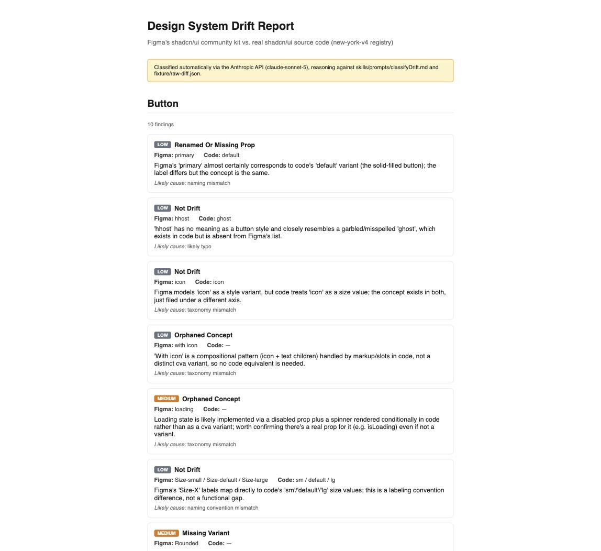
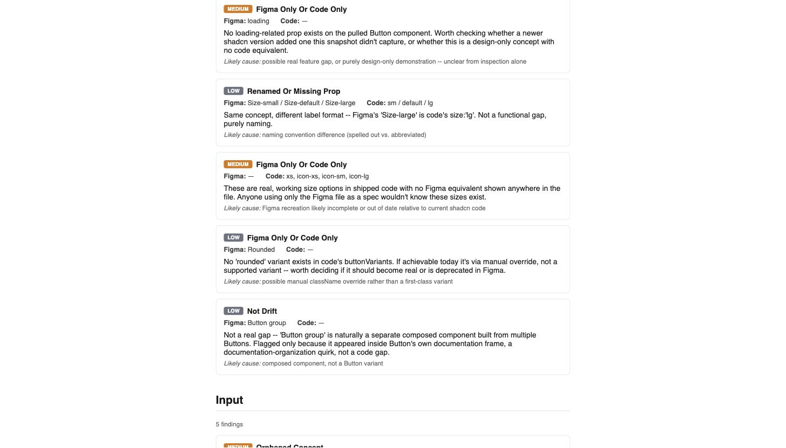
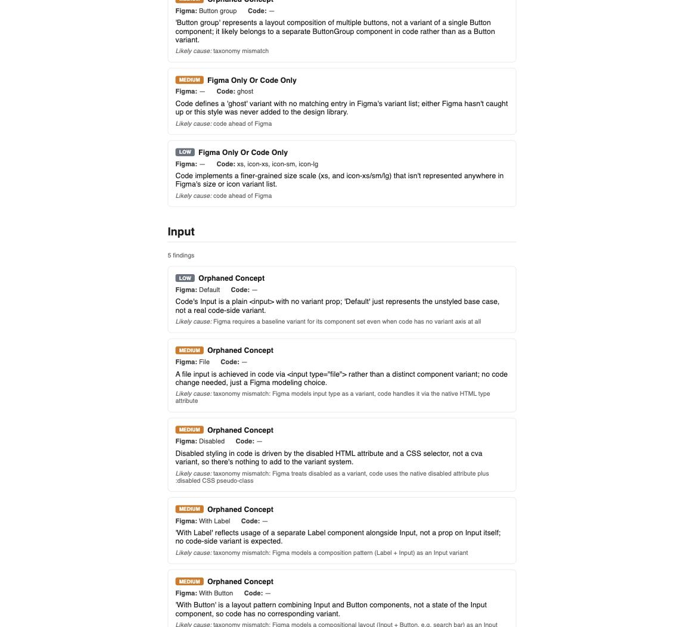

Design System Drift Auditor
Points at a Figma component library and its real coded implementation, and classifies every difference as real drift, an orphaned concept, or noise — not a plain text diff.

Every finding gets a severity, a plain-language explanation, and a likely cause — not just a diff line.
Surfaced while scoping what project comes next, in the context of an upcoming screening call for a role where design-system management is directly relevant work — but built for the portfolio, not for that call, and scoped honestly rather than rushed to a deadline.
Docs-first again: a project brief, a drift-classification-rules doc, and an architecture doc were written before any code, same discipline as The Agentic 4.
The demo subject is a real Figma file: a third-party community recreation of shadcn/ui, paired against the real, published shadcn/ui React + Tailwind source it models.
That's a different, more honest claim than "an official design system decayed over time." Inspection alone can't tell whether a mismatch is drift from a match that once existed, or a place the recreation was never fully exact to begin with — so the tool doesn't claim to distinguish the two, only to classify what's actually mismatched right now.
Real Code Connect needs a paid seat tier Kevin's account doesn't have, so a small hand-authored mapping file substitutes for it — the same epistemic move Code Connect itself makes (a human declares the pairing once), just living in a local file instead of Figma's own system.
Figma's real variant data comes in via the Figma MCP, transcribed into fixture snapshots; the real shadcn/ui source is pulled live from GitHub's new-york-v4 registry.
A real AST parser (Babel) reads each component's actual cva() variant structure out of the code — no regex guessing, real parsed structure.
A mechanical diff step deliberately does no judgment, just lists every raw set difference between Figma's variant list and code's parsed variants. Judgment happens downstream, in a classification step that sorts each raw difference into a category — real drift, an orphaned concept, a naming difference, or not drift at all — with a plain-language explanation and a likely cause.


Classification originally ran by Claude reasoning directly against the prompt and the raw diff — a real result, but a one-time manual pass, not a repeatable tool. scripts/classify.mjs now makes the same judgment call through a real Anthropic API request, using the exact same prompt, so a rerun produces a fresh, independent classification rather than replaying a cached answer.
The diff step moved from two hardcoded functions to a config file (audit.config.mjs) that both scripts loop over — adding a component to the list, not the code, is what it takes to bring one more into the pipeline.
A small local server put an actual "Run Audit" button in front of what used to be three typed terminal commands: click it, the full diff → classify → report pipeline runs, and the finished report opens — no command line required to see a result.
A real bug surfaced immediately on the first live run and got fixed the same session: the classifier's own explanations sometimes contain literal HTML (like <input type="file">, describing real code), and the report was rendering that as an actual form control instead of text — an unescaped-output bug, caught by actually looking at the output rather than trusting it.
Real gap, named and open: the pipeline is config-driven for components, but still hardcoded to one Figma file and one codebase (this shadcn/ui pairing). Pointing it at an arbitrary team's arbitrary Figma file — a live Figma fetch instead of a hand-transcribed snapshot — is real, scoped future work, not implied to already work.
Real gap, named and open: the code-side parser only understands the cva() variant pattern shadcn/ui itself uses. A component styled a different way (styled-components, plain conditional classNames) wouldn't parse without a new adapter.
A live, click-to-run tool, not a script you have to know how to invoke: reads real Figma data and real parsed code, runs the classification through the actual Anthropic API, and produces a report distinguishing real fidelity gaps from noise — 15 findings across two components, each with its own severity and reasoning, not a raw diff dump.
Scoped and captioned honestly: this demonstrates fidelity-gap detection between an independent third-party Figma recreation and its source, not an official design system's decay — a distinction the project brief insists on rather than letting the stronger claim go unchallenged.
- Figma MCP
- AST Parsing
- LLM Classification
- Proof of Concept